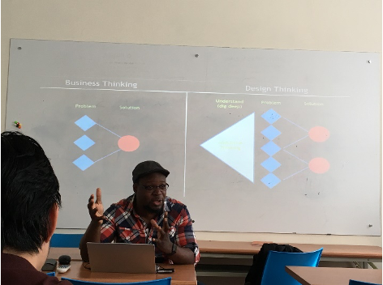
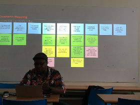
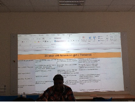
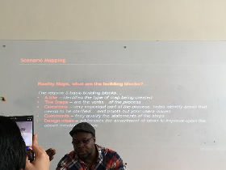

Unlocking Creativity and Strategy in Design: Insights from Nikoi Sanniez’s Seminar

In the ever-evolving world of design, the journey from concept to creation is both an art and a science. Recently, I had the privilege of attending a seminar led by the renowned designer Nikoi Sanniez, a distinguished freelancer with roots in Ghana, who was raised in the UK and is currently making waves in Taiwan. With a robust academic foundation from Brunel University and over a dozen years of industry experience at Crea8 Design, Nikoi has maneuvered through roles, transitioning from a Junior Industrial Designer to a Senior Design Manager, before embracing the freelance realm. His story is not just a testament to his stellar career but an inspiring blueprint for aspiring designers.
The Power of Observation in Design

The seminar kicked off with an engaging title that immediately sparked intrigue: “Observation in Design: Why it Matters?” It’s a simple but profound inquiry that lies at the heart of design philosophy. Observation empowers designers to empathize with users, capturing the essence of their needs and desires. Nikoi eloquently broke down complex concepts into relatable ideas, stressing how observation is the cornerstone of user-centric design.
Merging Business Acumen with Creative Vision
One of the central themes of Nikoi’s discourse was the symbiotic relationship between business strategy and design. In a field where creativity meets marketability, understanding the trifecta of feasibility, viability, and desirability becomes paramount. Nikoi’s narrative was a reminder that to thrive in the design industry; one must cultivate not only aesthetic sensibility but also strategic insight.
Overcoming the Hurdle of Realization
A phrase from Nikoi’s seminar that resonated deeply with me was, “Supposed is good, realizing is better.” It served as a powerful nudge towards action, highlighting a common obstacle many creatives face: the gap between ideation and execution. Fear of rejection or failure often paralyzes talent, but as Nikoi illustrated, the key lies in focusing on what truly matters – creating exceptional experiences that resonate with users.
The Journey Toward Exceptional User Experiences
Nikoi delved into the essence of crafting user experiences that leave a lasting impression, emphasizing the crucial first step of understanding the target audience and their preferences. In a world where change is the only constant, striking the right balance between innovation and familiarity is challenging. Yet, through subtle design alterations and technological enhancements, designers can cater to users' evolving needs without overwhelming them.
Embracing Scenario Mapping
A technique that Nikoi spotlighted was scenario mapping, an exercise in empathy that allows designers to step into the shoes of their users. By exploring various user interactions and emotional journeys, designers can create products that not only meet needs but also enrich lives. It’s about seeing the larger picture and crafting designs that stand the test of time.
Final Thoughts: The Blueprint for Success
Reflecting on Nikoi Sanniez’s seminar, it’s clear that the path to mastering design is multifaceted. It requires a deep understanding of users, a strategic approach to business, and the courage to bring ideas to life. Whether you’re a freelancer or part of a design company, the principles of design thinking are universal. As we navigate the complexities of the design landscape, let's take inspiration from visionaries like Nikoi and strive to create work that truly matters.
By embracing these insights, we can transcend the ordinary and venture into the extraordinary, shaping a world where design not only meets but anticipates the needs of tomorrow.


